仿真与调试过程分析
1.PS2
上版功能验证
将四个信号对应四个LED灯，上板结果如下：
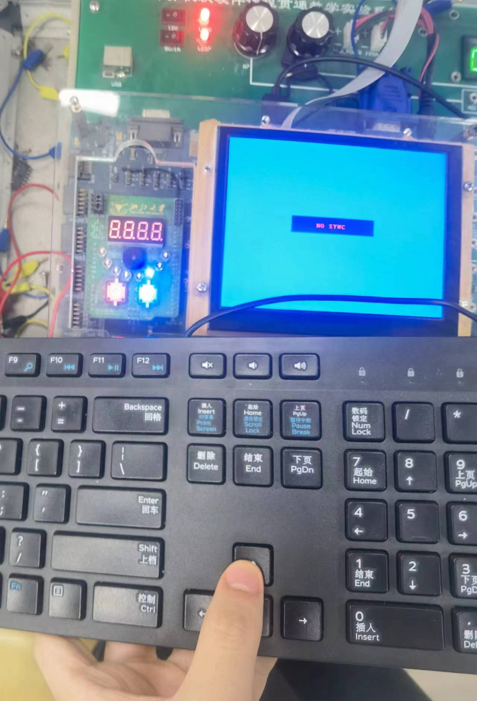
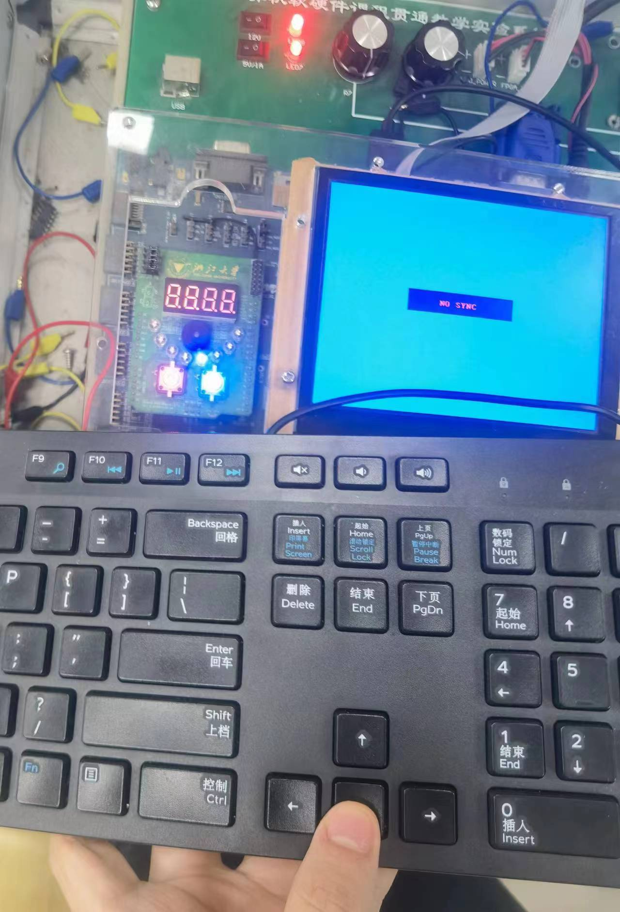
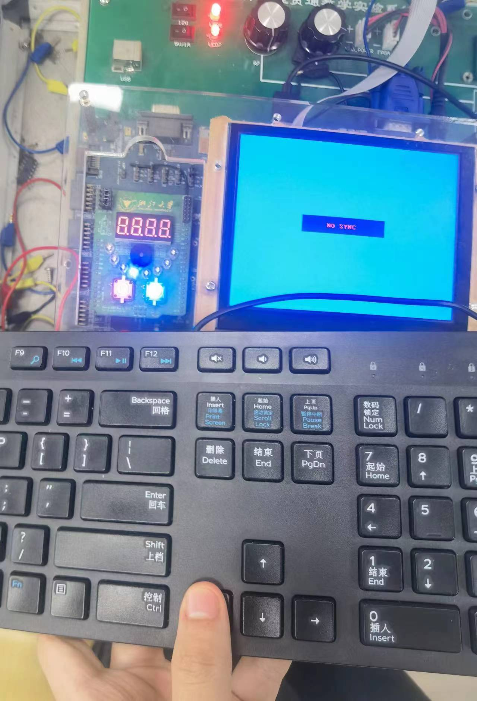
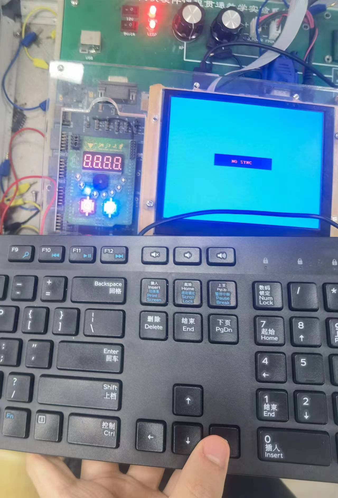
上板结果分析：成功读取四个按键的信号，PS2编写正确。2.VGA
仿真测试
由于单独测试该模块，写了一个临时的计算 $state$ 变量的模块用于测试：
module target_v(
input [9:0] cell_x,
input [8:0] cell_y,
output reg [2:0] state
);
wire [5:0] cell_addr_x; // 单元格 x 坐标
wire [4:0] cell_addr_y; // 单元格 y 坐标
parameter H_PIC = 10'd16;
assign cell_addr_x = cell_x / H_PIC; // 计算单元格 x 坐标
assign cell_addr_y = cell_y / H_PIC; // 计算单元格 y 坐标
always @(cell_x or cell_y) begin // 设置相应的单元格状态
if (cell_addr_x == 6'd1 && cell_addr_y == 5'd1) begin
state = 3'd1;
end else if (cell_addr_x == 6'd2 && cell_addr_y == 5'd1) begin
state = 3'd2;
end else if (cell_addr_x == 6'd3 && cell_addr_y == 5'd1) begin
state = 3'd3;
end else if (cell_addr_x == 6'd4 && cell_addr_y == 5'd2) begin
state = 3'd4;
end else if (cell_addr_x == 6'd5 && cell_addr_y == 5'd2) begin
state = 3'd5;
end else if (cell_addr_x == 6'd6 && cell_addr_y == 5'd2) begin
state = 3'd6;
end else begin
state = 3'd0;
end
end
endmodule
临时 $top$ 模块：
module vga_top(
input clk,
output [3:0] R, G, B,
output HS, VS
);
wire vga_clk;
wire [11:0] pixel;
wire [8:0] pix_y;
wire [9:0] pix_x;
wire [2:0] state;
parameter game_state = 2'b10; // 将 game_state 变量设置为参数，便于在testbench文件中修改
parameter H_PIC = 5'd16;
function [9:0] cell_x; // 计算像素点对应单元格的左上角x坐标
input [9:0] pix_x;
begin
cell_x = (pix_x >> 4) * H_PIC;
end
endfunction
function [8:0] cell_y; // 计算像素点对应单元格的左上角y坐标
input [8:0] pix_y;
begin
cell_y = (pix_y >> 4) * H_PIC;
end
endfunction
clk_gen ck_gen0(.clk(clk), .vga_clk(vga_clk));
vga_ctrl vga_ctrl0(.clk(vga_clk), .rst(1'b0), .Din({pixel[3:0], pixel[7:4], pixel[11:8]}),
.row(pix_y), .col(pix_x), .R(R), .G(G), .B(B), .HS(HS), .VS(VS));
target_v gen_state(.cell_x(cell_x(pix_x)), .cell_y(cell_y(pix_y)), .state(state));
vga_screen_pic vga_screen_pic0(.clk(clk), .pix_x(pix_x), .pix_y(pix_y),
.state(state), .game_state(game_state), .pix_data_out(pixel));
endmodule
$testbench$ 文件：
module vga_tb();
reg clk;
wire [3:0] R, G, B;
wire HS, VS;
vga_top test(.clk(clk), .R(R), .G(G), .B(B), .HS(HS), .VS(VS));
// 切换游戏状态
defparam test.game_state = 2'b00; // 游戏待开始
// defparam test.game_state = 2'b01; // 游戏进行中
// defparam test.game_state = 2'b10; // 游戏结束
initial begin
clk = 1'b1;
end
always begin
clk = ~clk;
#5;
end
endmodule
游戏开始
整体图片：
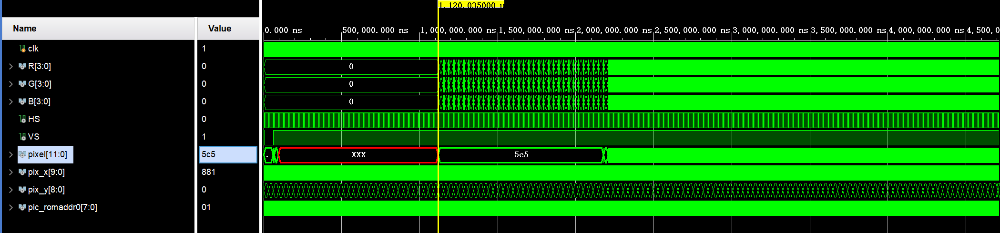
局部细节：
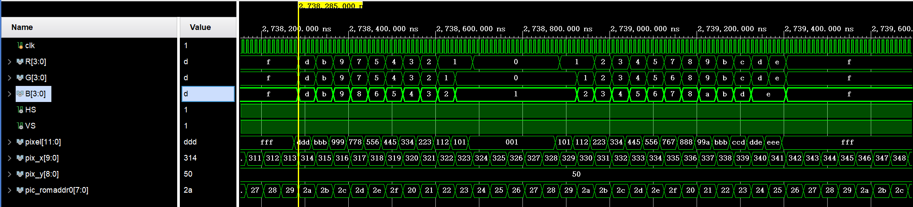
经比对，该数据与 $.coe$ 文件中的数据相同。
3.蜂鸣器
仿真测试
$testbench$ 文件：
module beep_tb();
reg clk;
reg [1:0] game_state;
wire beep;
top_beep test(.clk(clk), .game_state(game_state), .beep(beep));
// 修改参数，缩短仿真时间
defparam test.bp_go.TIME_125ms = 24'd1249;
defparam test.bp_go.AS_4 = 18'd21;
defparam test.bp_go.A4 = 18'd22;
defparam test.bp_go.GS_4 = 18'd24;
defparam test.bp_go.G4 = 18'd25;
defparam test.bp_gs.TIME_125ms = 24'd1249;
defparam test.bp_gs.A4 = 19'd22;
defparam test.bp_gs.D5 = 19'd17;
defparam test.bp_gs.C5 = 19'd19;
defparam test.bp_gs.B4 = 19'd20;
defparam test.bp_gs.FS_4 = 19'd27;
defparam test.bp_gs.G4 = 19'd25;
defparam test.bp_gs.D4 = 19'd37;
defparam test.bp_gs.E4 = 19'd30;
defparam test.bp_gs.F4 = 19'd28;
defparam test.bp_gs.C4 = 19'd38;
defparam test.TIME_125ms = 26'd6250;
initial begin
clk = 1'b1;
game_state = 2'b00;
#100000;
game_state = 2'b01;
#100000;
game_state = 2'b10;
end
always begin
clk = ~clk;
#5;
end
endmodule
仿真结果已在解释实现步骤时展示。
4.状态机
仿真代码
module test_state(
);
reg rst;
reg clk;
reg start_button;
initial begin
rst=1'b0;
clk=1'b1;
start_button=1'b0;
end
always begin
#5 clk=~clk;
end
always begin
#100000 rst=1;
#100000 start_button=1;
#10 start_button=0;
end
wire HS,VS;
wire R,G,B;
wire AN;
wire SEG;
wire LED;
wire beep;
top top(.rst(rst),.clk(clk),.start_button(start_button),.ps2_clk(1'b0),.ps2_data(1'b0),.VS(VS),.HS(HS),.R(R),.G(G),.B(B));
defparam top.run_module0.MAX_CNT =7;
endmodule
仿真结果
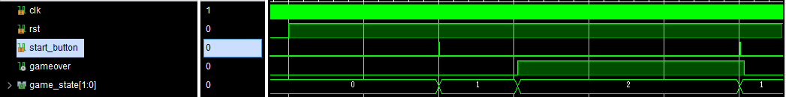
游戏初始为开始界面状态(2'b00)rst始终置1，当start_button置1时游戏进入游玩中状态(2'b01)；当gameover置为1时，游戏进入结束状态(2'b10)；当start_button再次置为1时，gameover重置为0，同时游戏状态重置为游玩中(2'b01)
5.运动模块
5.1 方向控制仿真测试
module test_state(
);
reg rst;
reg clk;
reg start_button;
reg [1:0]dir;
initial begin
rst=1'b0;
clk=1'b1;
start_button=1'b0;
dir=2'b00;
end
// always begin
// #100 start_button=1;
// #100 start_button=0;
// end
always begin
#5 clk=~clk;
end
always begin
#100000 rst=1;
#100000 start_button=1;
#10 start_button=0;
end
always begin
#1000 dir=2'b00;
#1000 dir=2'b01;
#1000 dir=2'b10;
#1000 dir=2'b11;
end
wire HS,VS;
wire R,G,B;
wire AN;
wire SEG;
wire LED;
wire beep;
top top(.rst(rst),.clk(clk),.start_button(start_button),.ps2_clk(1'b0),.ps2_data(1'b0),.VS(VS),.HS(HS),.R(R),.G(G),.B(B));
defparam top.run_module0.MAX_CNT =7;
endmodule
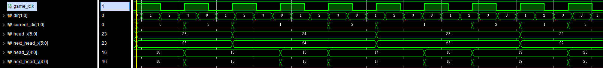
测试每1000ns改变一次dir信号：每当game_clk为正边沿时，改变current_dir为dir，同时有限制条件：当欲改变方向与运动方向相反时，不会发生改变。
激励图中，蛇分别发生向上、向右、向下、向左的运动，xy坐标发生对应正确的变化。
5.2 触碰障碍或身体
触碰身体：
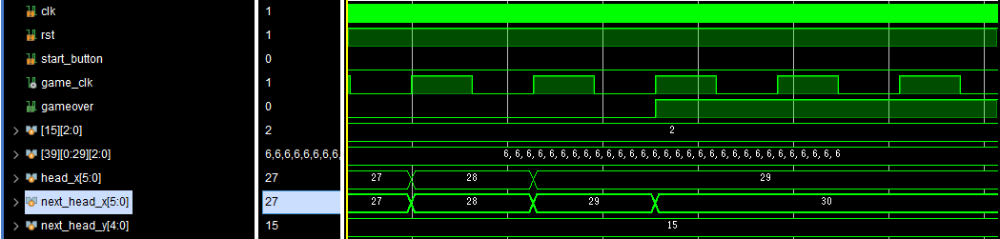
人为在 (30,15)放置了一个不动的身体块(即state[30][15]=3'b010)，当head坐标移动到(30,15)时gameover置1，游戏结束。
触碰障碍：
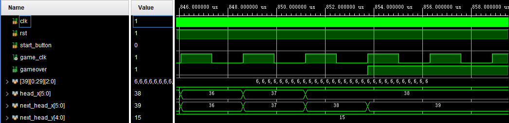
初始不改变蛇移动方向，径直向右移动到最边界(39,15)，gameover置1，游戏结束
5.3 移动到空白格
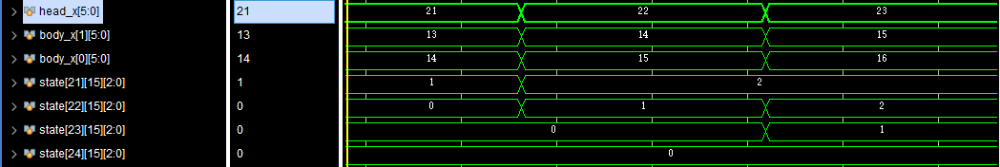
图中监测了蛇头的x坐标和两个身子的坐标，以及途径的(21,15)(22,15)(23,15)(24,15)四处位置的状态变化；可以清楚看到蛇头坐标正确增加的同时，身子坐标随之挪动，并且沿途格子依次状态从空白变为头、身再到空白
5.4 吃到食物
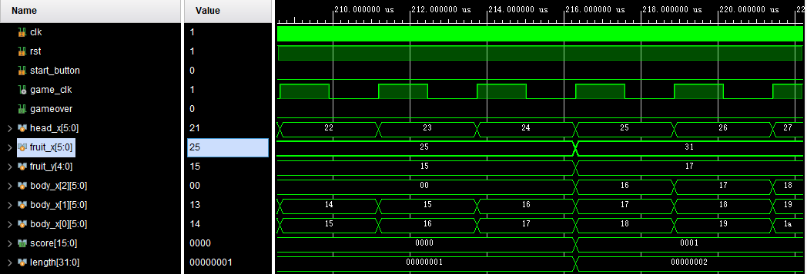
初始在(25,15)放置了小食物，在蛇头抵达前score=0和length=1； 当吃到食物后，新产生随机的食物坐标，并且身体增长，body_x[3]出现新的值，length增长，score增加